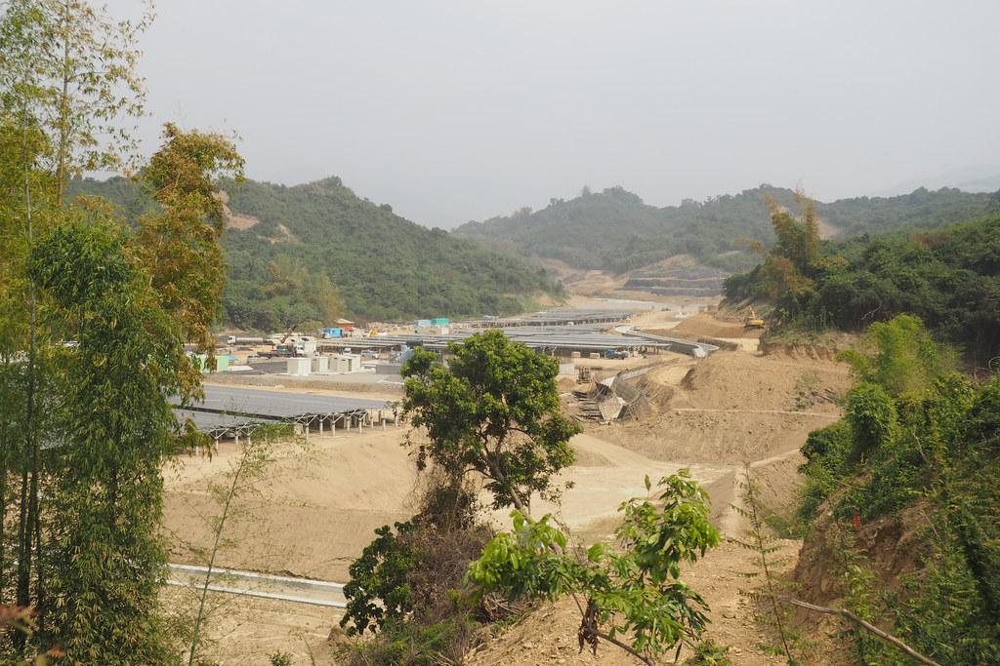

太陽光電專案專區併網
沿海土地轉型的主要政策工具
屏東種電現況：從屋頂、農地與魚塭，
到坡地和海上試驗，看見能源轉型的地方現場。
光電擴張如何改變農漁村？誰決定土地用途，誰承擔環境成本？從現場影像、審查文件與地方聲音，檢視發展、爭議與仍待釐清的問題。

同樣是光電，設置在哪裡、誰能受益、
原本的土地如何使用，決定不同的公共議題。
沿海土地轉型的主要政策工具
在建築空間整合能源設施
不等同佳冬外海試驗的容量
統計基準：2024 年底／113年度官方成果；不是2026即時值，也不是全縣總量。三項口徑可能重疊，不加總比較。查看官方統計
住宅、市場與校園的重點，在結構、防風、消防及維護。
原有農漁業、地主與耕作者權益，以及退役後復原，是關鍵。
養水種電、漁電共生、設施型農電並非同一制度；要核對實際生產。
山坡的排水與棲地，水域的結構、養殖與水質，不能只看發電量。
租地、申請開發、面板覆蓋及水域範圍，
數字不能互換，也不直接相加。
1公頃＝10,000平方公尺，約3,025坪。面積說明土地尺度；MW是裝置容量，不能用固定比例換算土地面積。
目前未取得同一統計基準的全縣光電用地總面積。以下是六個選例的歷史記載或受訪數字，不是2026年全縣現況普查。沒有完整地籍及配置圖的地方已註明。
| 案例 | 面積與計算對象 | 如何解讀 |
|---|---|---|
| 林邊光采濕地 | 歷史介紹約7公頃2014年所述高架光電板下空間 | 約70,000平方公尺。不同年代對園區、承租土地與板下空間的計算不同；未取得2026年完整界址與面板覆蓋面積，不能當作現況。 [26] |
| 林邊鎮安光電專區 | 第三期約12.33公頃歷史申請開發面積 | 原索引記載123,256.18平方公尺、56筆土地；僅第三期，不是林邊全鄉或鎮安各期總面積。原PDF全文、函號與後續變更仍待核。 [5] |
| 枋寮石頭營周邊 | 租用104公頃／原規劃設施40公頃2021年報導的生利能源租地與規劃 | 分別約1,040,000與400,000平方公尺。租地、原規劃、實際施工及遺址範圍不同；不表示104公頃全鋪面板或全遭毀損，也不套用周邊不同業者。 [7] |
| 楓林部落上方坡地 | 約2公頃2026年1月受訪承包商所述案場面積 | 約20,000平方公尺。尚未取得核定地籍及實際整地範圍，不能只由約數判定免環評，也不能當成實測值。 [12] |
| 佳冬外海浮台試驗 | 基座長寬換算約3.45公頃縣府受訪所述383公尺×90公尺 | 相乘為34,470平方公尺（約3.447公頃），是概略矩形尺寸換算，非實測淨面積。業者另稱外圍堰及浮台總範圍約16公頃；未取得配置圖，無法核對兩種口徑。兩者均非污染、漂流或受害海域面積。 [14] [28] |
| 屏東西市場屋頂光電 | 屋頂綠電約0.1155公頃2026年3月報導所稱屋頂綠電面積 | 原數字1,154.95平方公尺，約349坪。是屋頂光電利用面積，非市場建築基地；原報導未附配置圖，不推定為面板實測淨面積。 [27] |
佳冬3.45公頃由383×90公尺換算；西市場公頃、坪數由原報導平方公尺換算，均為約數。地圖仍只標代表點，不以圓點大小表示案場面積。
選擇類型或案例，對照事實、居民陳述與待查風險。
地點均為閱讀用代表點。圓形標記不是開發面積、污染範圍或地籍邊界；沿岸標點也不是外海設施位置。
坡地、水域與社區，各有不同議題。
原始照片保留色彩與全幅，不裁切、不覆字。
這些是2016、2018、2021與2024年報導中的歷史影像；日期為刊登日，未另載者不推定拍攝日。它們不是2026現況普查，也不全是受損或違規案例。
顯示8張照片；點擊可放大閱讀。
施工區內的面板、整地裸土與周邊植被同時入鏡。照片可記錄地表擾動，不能單憑影像判定水保不合格或災害成因。
地點｜枋寮鄉新開村
報導刊登｜2021.03.02；拍攝日未另載
李育琴／環境資訊中心 · 原始報導 · CC BY-NC-ND 4.0
現勘人員站在施工坡面與二戰遺跡附近。文資調查範圍、地下構造與施工安全需要對照核定圖說。
地點｜枋寮鄉石頭營周邊
報導刊登｜2021.03.02；拍攝日未另載
李育琴／環境資訊中心 · 原始報導 · CC BY-NC-ND 4.0
居民以布條表達對山林及文化地景的關切。布條文字是抗議者的主張，不作為損害已獲認定的證據。
地點｜枋寮石頭營光電爭議現場
報導刊登｜2021.03.02；拍攝日未另載
李育琴／環境資訊中心 · 原始報導 · CC BY-NC-ND 4.0
地下碉堡與周邊植被構成文化地景。這是保存議題的現場記錄，不代表全區遺址都已毀損。
地點｜枋寮鄉石頭營
報導刊登｜2021.03.02；拍攝日未另載
李育琴／環境資訊中心 · 原始報導 · CC BY-NC-ND 4.0
水面、架高設施與光電共同出現在濕地示範場域。此為歷史影像，不表示今天的設備、營運或水質狀況。
地點｜林邊鄉光采濕地
報導刊登｜2016.05.30；拍攝日未另載
李育琴／環境資訊中心 · 原始報導 · CC BY-NC-ND 4.0
原報導圖說標示為屏東滯洪池浮動型光電。這不是2025年佳冬外海浮台風災照片，也不把未明示的位置補猜成特定案場。
地點｜屏東滯洪池；原圖說未詳列鄉鎮
報導刊登｜2018.11.05；拍攝日未另載
李育琴／環境資訊中心 · 原始報導 · CC BY-NC-ND 4.0
原報導記錄東片村農村地景，並談未來盤點社區屋頂及農業設施。照片是社區背景，不是屋頂光電已完工的證明。
地點｜內埔鄉東片村
報導刊登｜2024.01.23；拍攝日未另載
李育琴／環境資訊中心 · 原始報導 · CC BY-NC-ND 4.0
報導記錄2024年1月20日合作社創立大會。此圖呈現地方參與及組織形式，不能當作電廠已完工、併網或產生收益的證明。
地點｜內埔鄉東片社區
報導刊登｜2024.01.23；拍攝日未另載
李育琴／環境資訊中心 · 原始報導 · CC BY-NC-ND 4.0
照片皆為李育琴攝影、環境資訊中心刊載，以CC BY-NC-ND 4.0供本非商業頁面展示。更多案例的未重製新聞影像仍由地圖案例連結至原始媒體。下載照片來源清單
環評、水土保持、文資與土地使用許可，
是不同程序；其中一項通過，不能代替其他項目。
| 案例及資料時點 | 環評資料狀態 | 水土保持／排水資料狀態 |
|---|---|---|
| 林邊光采濕地莫拉克災後推動；歷史調適案例 | 尚未取得個案環評書件或免環評認定；調適示範介紹不等於環評審查。 | 濕地與水路為核心。宜核對滯洪容量、出流口、養殖抽排水及日常維護。未取得完整核定圖說。[3] [2] |
| 林邊鎮安光電專區歷史第三期文件；2026年仍見其他期別公告 | 歷史第三期：索引載明免環評。原PDF本次無法完整下載，日期、函號與後續變更待核；不能推論所有期別皆免環評。 | 未取得第三期完整水保或出流管制文件。平地仍須關注地面整備、渠道銜接與下游承受能力。[5] [6] [2] |
| 枋寮石頭營周邊2020起；本頁交叉引用2021、2023、2024報導 | 2021年原文會報導描述「未做環評但有水保」；本頁未取得原免環評認定函、各期變更及完整審查檔案。 | 2021年公視記錄水保工程範圍爭議。需比對核定圖、實際整地、截排水與沉砂設施；尚無本頁可確認的致災因果鑑定。[7] [8] [9] [10] [11] |
| 楓林部落上方坡地2023陳情；2026-01-12再有說明會爭議報導 | 尚未取得環評結論或免環評原函；面積為承包商說法，不能單以「約2公頃」判斷免環評。 | 2023年縣府說明當時處於水保計畫階段；2026年承包商表示納入梯田式水保考量。完整核定及完工查驗文件未取得。[12] [13] |
| 佳冬外海浮台試驗2025年7月丹娜絲風災；後續水質成果2026公開 | 尚未取得本試驗的環評認定原函，不能用研究試驗身分逕行推定免環評。海域使用許可與環評是不同程序。 | 海上案的主軸為錨定、風浪、漂流物及岸際復原，不能把山坡地水保計畫直接套用。[14] [15] [16] |
| 屏東西市場屋頂光電2026年7月節電走讀報導 | 現行環評法第5條光電專款排除屋頂型；但本頁未取得該建築整體開發的環評適用認定，不能寫成所有程序皆免審。 | 屋頂型通常以建築安全與雨水排放為重點；本頁未發現需山坡地整地的證據。[4] [17] |
這不是主管機關的合法性認定清單，也不是環評系統完整清查結果。部分歷史來源未能取得原件，已在表內註明。開啟環境部環評書件系統
光電板本身、清除植被與施工整地，是不同的影響來源。實際風險取決於地形、土壤、降雨、地表覆蓋與排水維護。技術依據
裸露土壤在降雨下可能增加沖蝕；施工期尤其需要臨時防護。
面板滴水與排水路徑可能集中水流；須保留地表覆蓋並安全導排。
要核對池體容量、堵塞與清淤紀錄，也要看下游渠道是否接得住。
有日期的施工前後影像、雨量與水位、現勘缺失、裁處或災因鑑定。裸土照片能證明當時地表狀態，不能單獨證明土石流或洪災由光電造成。
各期地籍與開發邊界、環評適用認定、水保核定與變更圖、滯洪沉砂及排水設計、施工查核、完工查驗和豪雨後維護紀錄。若涉及生態與文資，還要對照調查範圍。
水土保持法對法定範圍內特定開發有計畫或簡易申報等程序；平地排水、建築屋頂與海域工程不可一律套用山坡地水保制度。水土保持法
可核對的公文、監測或現場紀錄。佳冬浮台毀損可證，不表示「落海釋毒」也成立。
標明誰說、何時說。保留地方經驗，也交代業者及主管機關回應。
把「可能發生」與「已經造成」分開，說明還缺哪些採樣、設計或因果證據。
從部落、漁村、農民與社區組織，
看見不同立場背後的生活條件。
這是公開採訪的意見摘要，不是民調或支持率統計。以下均為轉述，非逐字引言；所選人士與當時說法不能代表全體屏東縣民，也不推定其今天仍持相同立場。主管機關及業者回應另見地圖個案。
反對此選址
廖清山反對在部落上方坡地設置光電，擔心居住安全與地方生活受到影響；宋銘德另提及村民對立，以及過去部落會議已表達反對。
這是受訪地方人士的陳述；泥水來源與致災因果另需調查，也不能推定所有族人意見一致。
擔心漁業及環境
受訪居民擔心浮台漂流物若處理不好，會影響依海維生的生活與養殖環境。這份不安與要求妥善清理的聲音，應與實際水質調查一併閱讀。
不是已證實的水質污染、魚損或食安結論；本頁也沒有全體漁民的意見調查。
個人有收益，也面對耕作限制
她說明以自有投入與貸款建置光電網室，讓務農之外增加較穩定的收入；也談到遮光、濕度、作物選擇與維運的挑戰，對把農地租給光電業者持保留態度。
這是特定農戶的經驗，不能當作所有農電共生都成功、都失敗，或各種設置今日都可申請的證明。
參與社區公民電廠
她期待讓地方居民參與自主再生能源，並使收入產生公共效益；從住家到集貨場、農舍等既有屋頂，都是當時合作社希望盤點的方向。
這是當時的參與及規劃主張，不等於所有案場已建置，也不表示她支持所有地面型或坡地光電。
要求保存與開發受檢視
他主張把碉堡、坑道及周邊文化地景整體調查，並要求水保計畫可供公眾比對實際施工。爭點不只在保留單棟構造物，而是整體土地如何使用。
這是地方保存行動者的主張；個案是否合法、工程是否造成特定毀損，仍須原始審查及鑑定資料。
來源查閱日：2026.11.19。報導日期、統計基準與查核日期分開標示；歷史報導不當作今日施工或營運狀態。地圖是選例導讀，不是全縣所有光電案場或土地覆蓋普查。
專區約356 MW、公有機關及校園屋頂約75 MW、浮動型11.9 MW。不同口徑，不能直接相加作全縣總量。
沿海四鄉鎮政策背景、地主權益與減少地下水抽用的政策主張。
養水種電、微電網與滯洪的整合；居民仍反映水路改善需求。
確認西市場屋頂光電與綠建築應用。
索引可讀取原環保署免環評認定摘錄；PDF 本次未能完整下載核對頁碼與函號。只限第三期，不推及全區。
林邊鎮安有不同期別說明會；公告不等於環評結論或完工證明。
施工、碉堡現勘與居民訴求；隧道損壞成因不能僅憑現場照片定論。
山坡整地、水保計畫範圍爭議與業者回應。
當時報導描述石頭營案未做環評但有水保；本頁未取得原認定函。
區分不同開發區與蝙蝠調查範圍；不能將全區物種紀錄套用每個案場。
經濟部說明業者提報歷史建築及規劃保存利用；不是本頁確認保存已完成。
村長談泥水與部落意見，承包商回應約2公頃及水保改善。
當時進行水保計畫，縣府表示後續光電開發須取得族人同意。
浮台漂流、清運與縣府停止使用海域3個月的當時處置。
網傳格狀物為步道踏板；查核不涵蓋業者是否於風災前拆板。
佳冬外海機動調查無異常；只代表該次採樣與檢測項目。
敏感區、山坡地、水面型、一般規模與累積開發規定；屋頂型等有排除規定。
山坡地等法定範圍開發，依開發類型與規模判斷水保程序。
排水、邊坡、滯洪與沉砂之設計維護。
本站八張李育琴攝影依 CC BY-NC-ND 4.0 使用，未裁切、調色或覆字；不含第三方圖片。
僅為部落公共地標，非光電案場位置。
用於濕地代表點，非專區邊界。
李育琴攝影；水域與架高設施，非今日營運狀態。
李育琴攝影；圖說未詳列鄉鎮，不推定為佳冬外海案場。
李育琴攝影；社區背景及創立大會，不作為屋頂電廠已完工的證明。
當時記載7公頃高架光電板下空間；不是2026年測繪或今日園區全域面積。
記載屋頂綠電面積1,154.95平方公尺；不是市場基地面積。
業者受訪稱外圍堰及浮台總面積16萬平方公尺，與縣府所述基座長寬口徑不同，原配置圖待核。
屏東崁頂農民劉秀娥談自建光電網室的生計、種植及維運經驗；不將個人經驗推及所有農電案。